Vanderbilt · Learning Series · ATD facilitator guide · print edition
AI 201: Beyond the Basics, the facilitator guide

Run of show
| Screen | Full (min) | Core (min) |
|---|---|---|
| Welcome / QR | 3 | 2 |
| Objectives | 2 | 1 |
| Agenda | 1 | — |
| 01 · Context & attention | 10 | 7 |
| Manifesto | 1 | — |
| 02 · Grounding with RAG | 10 | 7 |
| 03 · Choosing your method | 10 | 7 |
| 04 · Advanced prompt patterns | 11 | 7 |
| 05 · Multimodal & agentic AI | 11 | 7 |
| 06 · Spot the hallucination | 7 | 5 |
| 07 · Governance | 8 | 5 |
| Recap quiz | 4 | 4 |
| Capstone · Team AI workflow | 8 | 6 |
| Glossary | 1 | — |
| Closing · commitment | 3 | 2 |
| Total | 90 | 60 |
Audience
Anyone who completed AI Basics (101) or equivalent: knowledge workers, managers, L&D and talent teams. 8 to 24 works best for pairs; scales larger with polling instead of breakouts.
Room setup
Projector + presenter device; learners on their own devices via the Welcome-slide QR; pairs for the method drill. Virtual: breakouts of 2 for the method and RAG discussions. Optional: a live chat tool open for the long-conversation demo.
Materials
- Projector or large display and the facilitator link open (this edition)
- Facilitator laptop with arrow keys or clicker; all notifications off
- Learner devices (BYOD) joining via the welcome-slide QR
- A few printed cheat sheets (cheatsheet.html) for anyone without a device
- Printed workflow cards (worksheet.html) as the no-device and projector-failure fallback
- Optional: a live chat tool open with a long document pasted in, for the context-window demo
- Whiteboard or flip chart for the parking lot and the room's RAG question backlog
A week before
- Read this guide end to end, then run BOTH editions start to finish, doing every exercise, including a full run of Spot-the-Hallucination (you'll be asked which ones fooled you; honesty plays well).
- Build your own workflow card in the capstone for a real recurring task. You will show the structure, not necessarily the contents.
- Confirm participants took AI Basics or equivalent; send the pre-work invite (template on this page) with the calendar invite.
- Decide your path now: Full (90-minute slot) or Core (60). Mark which videos you keep in class versus assign.
- If you'll run the live context-window demo, rehearse it once: paste a long document, chat 15+ turns, then ask about something near the start.
The day before
- Test the projector with the facilitator link; confirm the notes rail is readable from where you'll stand.
- Scan the welcome QR from the back of the room with your own phone; it must land on the learner edition.
- Cue and test the three videos (attention, RAG, agents); trim points are in the DO notes.
- Print 5 to 10 cheat sheets and workflow cards, plus this guide's run-of-show.
- Re-read the tough-questions bank; say the 'can I finally trust RAG answers?' response out loud once.
30 minutes before
- Welcome slide up as people arrive; it does the enrolling for you.
- Close every other tab and app; silence the machine.
- Test arrow-key navigation and one interaction (drag the context-window slider, toggle the RAG simulator).
- Write 'PARKING LOT' and 'RAG BACKLOG' at the top of the whiteboard.
- Remember the tone: this room already prompts; today they become the people who can explain WHY it worked.
When things go sideways
If Projector or the site fails mid-session: Teach from the printed cheat sheet: the window habits, the method framework, the four patterns, the failure modes, and the tiers all work on a whiteboard. Spot-the-Hallucination runs verbally with the room voting by hand.
If Learner devices can't join (wifi/filters): Run facilitator-only: the simulators and trainers play well on the projector with the room voting A/B/C by hands; the capstone moves to the printed workflow card. You lose typing, not learning.
If You're 10+ minutes behind by the patterns section (04): Declare the Core path silently: cut remaining videos and shrink debriefs to one voice. Never cut Spot-the-Hallucination, the tier sorter, or the capstone; they carry objectives 5 and 6.
If The room's prerequisite knowledge is shakier than expected: Don't reteach AI Basics; bridge in one line ('a prompt is the instruction; today is what happens after you hit send') and lean on the simulators, which carry novices. Point strugglers at the 101 link in the footer for after.
If A technical expert starts correcting nuances or going deeper than the room: Honor and park: 'That's right, and there's real depth there; parking lot so we keep the room together.' Offer the 3Blue1Brown full video and the White et al. catalog as their level. Experts make great Spot-the-Hallucination judges; deputize them.
If Someone reports their team is already doing something risky (red-tier data in a public tool): Don't shame, don't skip: 'That's exactly the incident pattern this session exists to prevent; the tier sorter in Section 07 is the fix.' Follow up privately after with the governance guidance, and route genuine policy questions to the official channels.
Tough questions, ready answers
Q: If RAG grounds the answers in our documents, can I finally trust them without checking?
Trust more, verify still. RAG fixes the raw material, not the reader: the model can misquote or blend what it retrieved. The upgrade is that verification gets fast, because a grounded answer hands you the exact source to check. Click the citation; that's the whole check.
Q: Is fine-tuning something our team could even do?
Technically yes, practically almost never first. It needs training data you probably haven't curated, compute you'd have to pay for, evaluation to prove it worked, and a redo every time the base model updates. The honest sequence is: exhaust prompting, add RAG, and if you still have evidence fine-tuning is needed, bring in central IT rather than going alone.
Q: Are agents actually safe to use at work right now?
Scoped, limited, and checkpointed: yes, for low-stakes drafting and compiling. Unsupervised with broad tool access: no. The failure modes are documented and repeatable, which is good news; it means the guardrails are designable. The workflow card you build today IS the safe pattern.
Q: Do I need to memorize the NIST framework?
No. You need the four questions it encodes: who decides, what are we running, how do we know it works, what do we do about it. If you can ask those about any AI tool your team uses, you're doing risk management; NIST just gives everyone the same vocabulary.
Q: Our vendor says their model doesn't hallucinate. True?
No model is hallucination-free; grounding and guardrails reduce the rate, sometimes dramatically. The professional response to that claim is: 'show me the evaluation results and red-team findings.' A vendor who has them will love the question, and a vendor who doesn't just told you something important.
Q: Does this session change the data rules from AI Basics?
It extends them, same colors, same rules. Green, yellow, red still govern what goes INTO a tool. AI 201 adds the workflow view: pattern, checkpoint, and tier travel together, so the rule follows the task instead of living on a poster.
Copy-paste templates
Pre-work invite (paste into the calendar invite)
Subject: Before AI 201. Two things before you arrive: 1) This session builds on AI Basics; skim your cheat sheet from that session if it's been a while. 2) Bring one real recurring task from your work (a weekly report, a triage queue, a drafting chore); you'll build a governed AI workflow around it, and nothing you type leaves your screen. Still no code, still no math.
7-day pulse (send one week after)
Subject: One week later, did the workflow run? Three quick lines, reply whenever: 1) Did you run the workflow you built, checkpoint and all? 2) What did the human checkpoint catch, if anything? 3) Did you use one of the four patterns (Few-Shot, Chain-of-Thought, Template, Flipped) this week? Replies come to me only. Not yet? The card still works; this note is your nudge.
30-day workflow census (send a month after)
Subject: The workflow census. One question for the group: does your team now have a written, governance-tiered AI workflow for at least one recurring task? Reply yes or no, and if yes, the task in five words. The count is the metric we designed the session around, and the yes-list becomes the example library for the next cohort.
After the session
Seven days out, send the pulse: 'Did you run your workflow? What did the human checkpoint catch? Did you use one of the four patterns this week?' At 30/60/90 days, count how many teams have a written, governance-tiered workflow for at least one recurring task; that census is the program's headline metric.
Welcome / QR Full 3 min · Core 2
Get every learner into the experience on their own device and set the frame: same fundamentals as 101, now open the hood.
Say
“Welcome back. Point your camera at that code before we start. You've all taken AI Basics, so you can write a prompt. Today we open the hood: why tools forget, where answers actually come from, what happens when AI starts taking actions, and how to run all of it responsibly. Still no code. Still no math.”
Do
- Have this slide projected as people arrive.
- Point at the QR and get phones up before you say anything else.
- Set the frame: builds on AI Basics, still no code, still no math, and everything typed stays on their screen.
- Confirm by show of hands that most of the room has the site open before advancing.
Ask
“Quick recall, shout it out: what's one AI Basics idea you've actually used since that session, and one thing you're still unsure about?”
Expect:
- Used: the four-part prompt, the data colors, verify-before-trusting
- Unsure: why it forgets, whether to trust it, what an agent is
- Some quiet; people warm up slowly on recall
Respond: Collect three or four of each. The 'unsure' list is your session preview: 'Everything you just named is on today's agenda. Watch for yours.'
Validate: 80%+ of the room has the deck open on a device.
Watch for: Anyone who hasn't taken AI Basics: pair them with a veteran neighbor and point them at the 101 link in the footer for after.
Transition: “Here's exactly what you'll be able to do in ninety minutes.”
Core path: Core: one scan prompt, state the frame, move on.
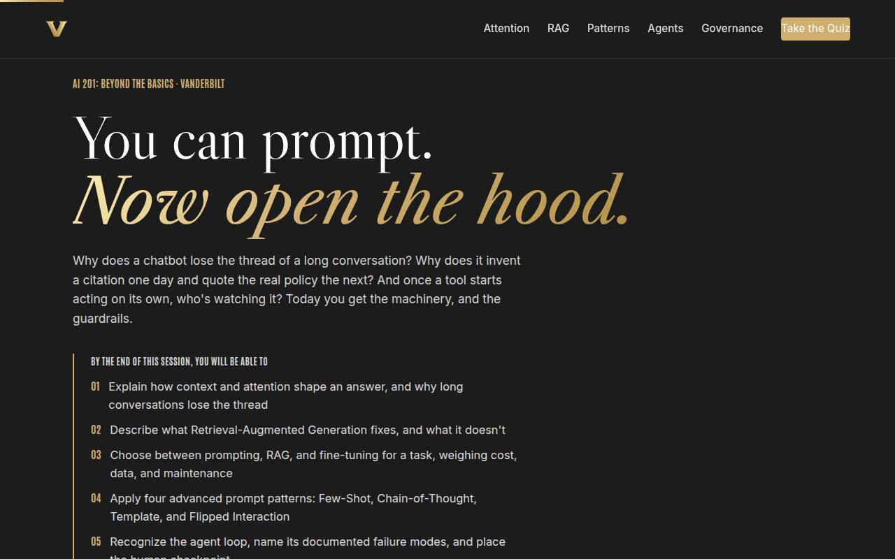
Objectives Full 2 min · Core 1
Set the contract: six capabilities, ending in a real governed workflow with a run date.
Say
“Six things by the end: you'll explain why long chats lose the thread, what retrieval actually fixes, when to prompt versus RAG versus fine-tune, four prompt patterns beyond the basics, how agents fail and where the human checkpoint goes, and how to tier information before it ever touches a tool. It all lands in one artifact: a governed workflow card for a task you actually do.”
Do
- Read the six objectives briskly, in plain language.
- Land on the sixth: this session ends with a REAL workflow card: task, pattern, checkpoint, tier.
- Name the sources once for credibility: 3Blue1Brown, IBM's research explainers, the Vanderbilt-led prompt pattern catalog, NIST.
Validate: Learners can say what the capstone will be (a governed AI workflow for a real recurring task).
Watch for: Anxiety about the word 'governance.' Defuse early: it's three colors and four questions, not a compliance seminar.
Transition: “Seven ideas, and the first one explains half the mysteries you've already met.”
Core path: Core: objectives 1 and 6 out loud; the rest on screen.
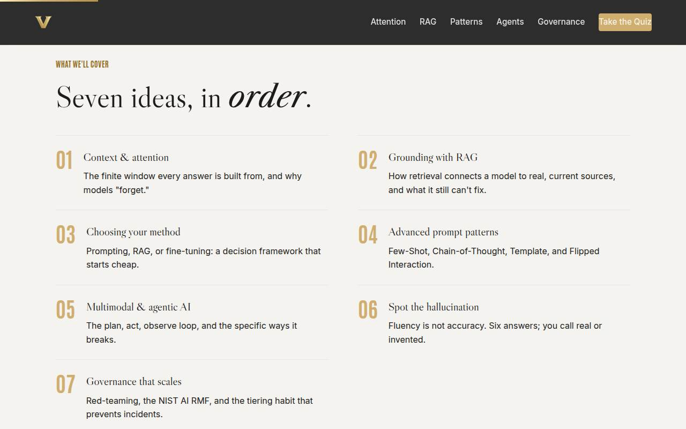
Agenda Full 1 min · Core skip
Show the arc once so learners can place each tool as it arrives.
Say
“Three moves: how the machine works, what happens when it starts acting on its own, and how you keep all of it honest.”
Do
- Walk the seven items in one breath each.
- Point out the shape: how it works (01-04), what happens when it acts (05), how you keep it honest (06-07).
Validate: None needed; this is orientation.
Watch for: Don't teach here; every concept has its own slide.
Transition: “Start with the window, because it explains the single most common complaint about these tools.”
Core path: Core: skip entirely; the deck's structure carries it.
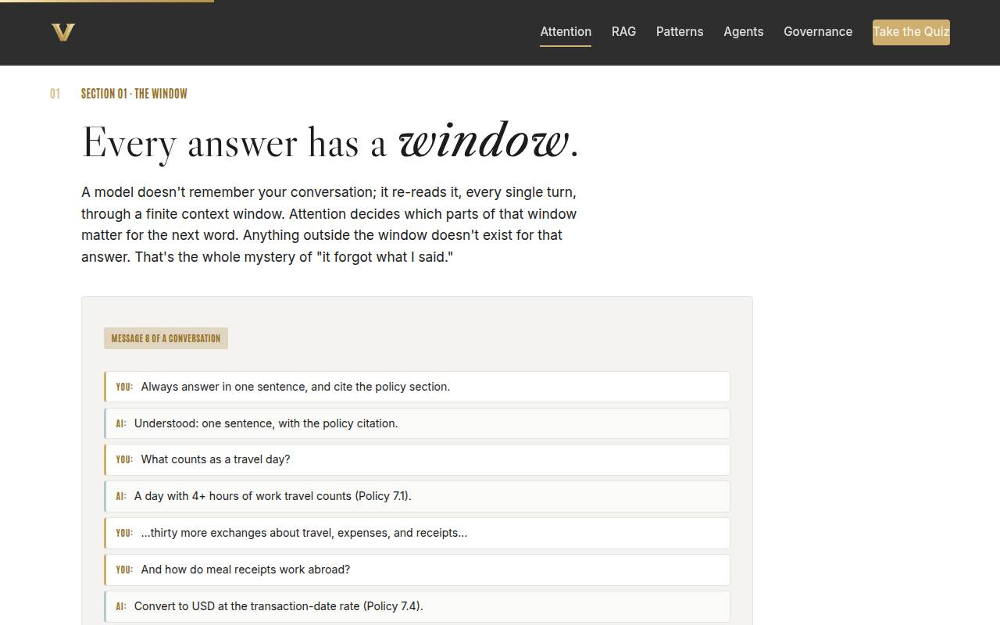
01 · Context & attention Full 10 min · Core 7
Install the context-window mental model so 'it forgot' becomes a diagnosable, fixable event instead of a mystery.
Say
“Here's the secret that explains half the weird behavior you've seen: the model has no memory. Every single turn, it re-reads your conversation through a window of fixed size, and attention decides which parts of that window matter for the next word. Twenty messages in, your opening instruction can fall out of the window entirely. It's not disobeying you; for that answer, your instruction never existed. Drag the slider and watch it happen.”
Do
- Teach the one-liner: the model doesn't remember, it RE-READS a finite window every turn, and attention decides what matters inside it.
- Demo the simulator on the projector: drag from short chat to marathon and read the answers aloud as they degrade.
- Send them to their devices to drag it themselves; the instruction falling out of the window is the aha.
- Play the 3Blue1Brown attention video, first ~6 minutes, on the Full path.
- Run the quick check, then the pair activity: diagnose a real 'it forgot' moment with the window model.
- Optional live demo if you rehearsed it: long document, 15 turns, ask about the start.
Ask
“Why does 'put the important instruction near the end of a long prompt' actually work, mechanically?”
Expect:
- Because it's definitely inside the window
- Recent stuff wins the attention contest
- Guesses about the model 'caring more' about endings
Respond: Anchor the first two: inside the window, and competing well. Gently mechanize the third: 'Not caring; competing. Attention is a contest, and recency is an advantage.'
Debrief: Three habits fall out of one mechanism: restate the key instruction, put the ask near the end, and start fresh on purpose.
Validate: Quick check correct; pairs can name the fix they'd use (restate, ask-at-the-end, fresh chat).
Watch for: The word 'attention' drifting into psychology. Keep it mechanical: everything in the window competes; the winners shape the next word.
Transition: “The window explains forgetting. The next idea explains the other mystery: where answers come from when the model can't possibly know.”
Core path: Core: simulator plus check plus one-line habits; cut the video (assign) and the pair share.
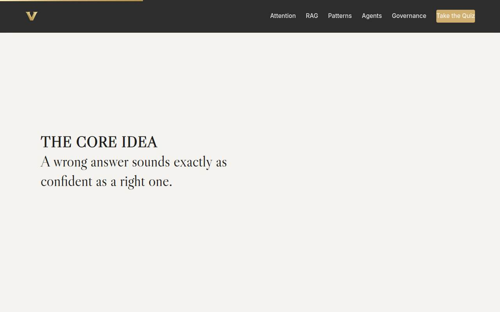
Manifesto Full 1 min · Core skip
One beat of stillness to lock the session's warning label before the tooling continues.
Say
“A wrong answer sounds exactly as confident as a right one.”
Do
- Let the line animate word by word. Say nothing until it finishes.
- Read it once, slowly, then advance.
Validate: None; this is pacing.
Watch for: The urge to talk over it. Don't.
Transition: “Which is why the next tool exists: giving the model receipts.”
Core path: Core: skip; say the line yourself as you pass it.
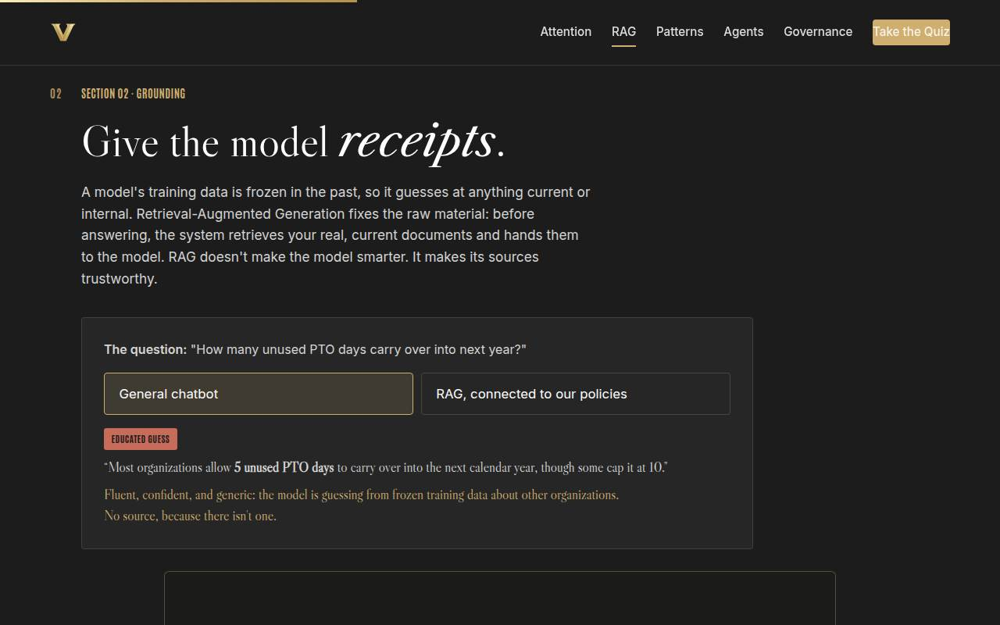
02 · Grounding with RAG Full 10 min · Core 7
Install the RAG mental model, retrieval fixes the raw material, not the brain, and surface where it belongs in learners' own work.
Say
“A model's training data is a photograph of the internet, taken a while ago. Ask it about YOUR policies and it does the only thing it can: guess fluently. Retrieval-Augmented Generation changes the supply chain: before answering, the system fetches your real, current documents and hands them to the model. Watch the same question twice. RAG doesn't make the model smarter; it makes the raw material trustworthy, and it hands you a citation you can actually click.”
Do
- Teach the one-liner: training data is frozen; RAG retrieves your real, current documents and answers from them.
- Demo the simulator on the projector: toggle from general chatbot to RAG and let the difference land: the guess versus the cited answer.
- Send them to their devices to toggle it themselves; point at the retrieved-source panel.
- Play the IBM RAG explainer on the Full path.
- Run the quick check, then the group activity: the question-a-chatbot-would-guess-at exercise, collecting the best on the whiteboard as a RAG backlog.
Ask
“What's one question at work a general chatbot would confidently guess at, but a tool grounded in OUR documents could actually get right?”
Expect:
- Policy and procedure questions
- Current-semester or current-quarter specifics
- Internal system how-tos
Respond: Write the best ones on the whiteboard under RAG BACKLOG: 'This list is a project backlog. Every item on it is a real, buildable use case, and now you know its name.'
Debrief: Grounded beats brilliant: same model, trustworthy sources, clickable receipts. And the citation click stays in the job.
Validate: Quick check correct (especially rejecting 'RAG answers can be trusted without checking'); the whiteboard has at least three real RAG candidates.
Watch for: Over-correction into 'so RAG solves hallucination.' The simulator's grounded answer still deserves a click on its citation; say so explicitly.
Transition: “So when do you prompt, when do you retrieve, and when do you reach for the heavy machinery? There's a framework, and it starts cheap.”
Core path: Core: simulator plus check; cut the video (assign) and collect only two backlog questions.
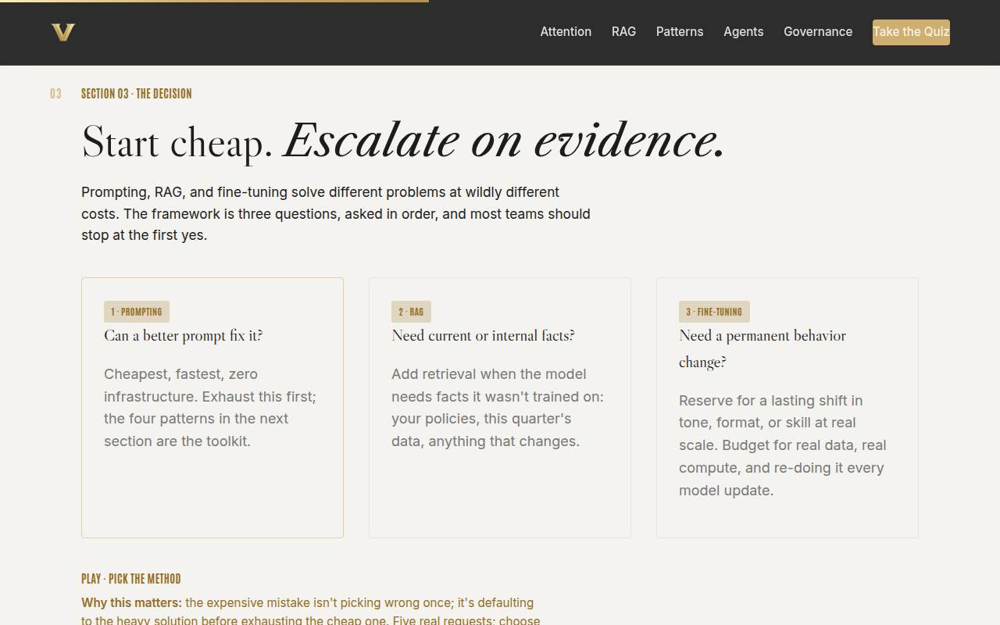
03 · Choosing your method Full 10 min · Core 7
Install the cheapest-first decision framework (prompting → RAG → fine-tuning) and practice it to a one-sentence justification.
Say
“Three tools, wildly different price tags. Prompting costs minutes and changes freely. RAG costs a document library and someone to keep it current. Fine-tuning costs training data, compute, evaluation, and doing it all again every time the underlying model updates, which is often. So the framework is three questions asked in order, and most teams should stop at the first yes: can a better prompt fix it? Does the task need current or internal facts? Does it genuinely need a permanent behavior change at scale? Start cheap. Escalate on evidence.”
Do
- Walk the three cards as three questions asked IN ORDER: can a prompt fix it, does it need current or internal facts, does it need a permanent behavior change.
- Stress the maintenance line: fine-tuning is redone every model update; that cost kills most cases.
- Send them to the method matcher: five requests, pick the lightest method that works.
- Debrief the room's scores; request 5 (the formal email) catches people who over-escalate.
- Run the pair activity: one real AI idea through the framework, ending in the justification sentence.
Ask
“Where have you seen a team over-invest in heavy machinery before exhausting the cheap fix, in AI or anywhere else?”
Expect:
- Buying a platform when a spreadsheet worked
- Custom builds for one-time problems
- Someone names a real AI example
Respond: Affirm the pattern: 'Same disease, new tools. The framework is the vaccine: evidence before escalation, and the justification sentence is what you'll say in the meeting where someone proposes the crane.'
Debrief: The one-sentence justification is the takeaway: we chose X because Y. If you can't finish that sentence, you're not done deciding.
Validate: 4+ of 5 on the matcher for most of the room; two pairs read a clean justification sentence aloud.
Watch for: The enthusiast who wants to fine-tune everything. The framework is the kind answer: 'show me the evidence the cheaper rungs failed.'
Transition: “For most of you, the answer will be 'a better prompt.' So let's upgrade what a better prompt means: four patterns past the basics.”
Core path: Core: cards fast, matcher on devices, skip the pair activity; the justification habit gets one worked example from you instead.
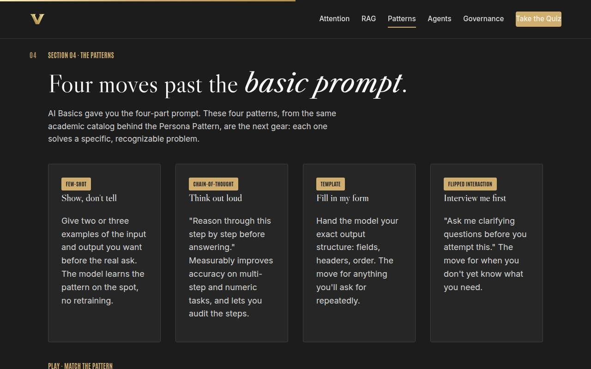
04 · Advanced prompt patterns Full 11 min · Core 7
Install the four patterns as sight-recognizable tools and get each learner one rewrite of a real prompt.
Say
“AI Basics gave you the four-part prompt. These four patterns are the next gear, and each one has a trigger you'll learn to hear. The model keeps formatting things wrong? Stop describing, start showing: Few-Shot. Multi-step logic coming back subtly broken? Make it think out loud: Chain-of-Thought. Same report every week? Hand it your structure once: Template. And my favorite: you don't actually know what you need? Flip it: 'ask me clarifying questions before you attempt this.' The model becomes the consultant.”
Do
- Walk the four cards with their triggers: examples to imitate → Few-Shot; multi-step or numeric → Chain-of-Thought; recurring structure → Template; don't know what you need → Flipped Interaction.
- Tie the lineage back: Template and Flipped come from the same Vanderbilt-led catalog as the Persona Pattern from AI Basics.
- Send them to the pattern matcher: five tasks, pick the pattern.
- Run the solo drill from Go deeper: rewrite one real prompt from their own work in the best-fit pattern.
- Neighbors swap and try to name each other's pattern; if the neighbor can't tell, the rewrite needs sharpening.
Ask
“Which of these four would have saved you the most time on something you did last week?”
Expect:
- Template, for recurring reports
- Flipped, for fuzzy requests
- Few-Shot, for formatting fights
Respond: Whatever they name: 'Good, that's the one you rewrite in the drill. Real prompt, real task, two minutes from now.'
Debrief: Patterns beat improvisation because they're reusable: the rewrite you just did is a work asset, not an exercise.
Validate: 4+ of 5 on the matcher; every learner has one rewritten real prompt, and most neighbors correctly named the pattern used.
Watch for: Pattern-collecting without application. The drill is the point; the matcher is just the warm-up. Protect the drill minutes.
Transition: “Everything so far is a model answering you. Now the bigger shift: what happens when it starts DOING things.”
Core path: Core: cover Chain-of-Thought and Flipped in voice, all four on screen; matcher stays, drill shrinks to writing the rewrite without the neighbor swap.
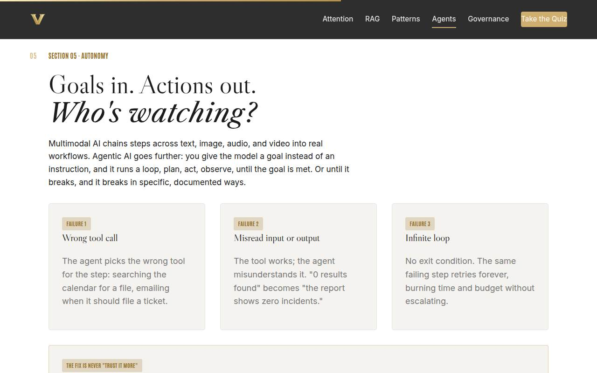
05 · Multimodal & agentic AI Full 11 min · Core 7
Install the plan-act-observe loop, make the three documented failure modes sight-readable, and set up the checkpoint decision the capstone requires.
Say
“Until now, the model answers and you act. An agent flips that: you give it a goal, and it runs a loop: plan the steps, act with tools, observe what happened, repeat until done. Or until it breaks, and here's the useful news: it breaks in specific, documented ways. It calls the wrong tool. It misreads what a tool told it. Or it loops forever because nobody gave it an exit. The fix is never 'trust it more.' It's scoped tools, step limits, and a human checkpoint before anything ships. You're about to read five real-style traces and catch the failures yourself.”
Do
- One line on multimodal (chaining steps across text, image, audio, video), then the main event: agents get GOALS, not instructions, and run a loop.
- Walk the three failure cards: wrong tool, misread input or output, infinite loop. These are documented patterns, not speculation.
- Land the gold card: the fix is never 'trust it more'; it's scoped tools, step limits, and a human checkpoint.
- Play the IBM agents video, first ~5 minutes, on the Full path.
- Send them to Babysit the Agent: five traces, name what broke. Trace 4, the healthy one that ends at a checkpoint, is the teaching moment.
- Run the group activity: where would an agent help your unit, and which checkpoint level does it get?
Ask
“Where in your own work would you want a FULL review before an agent's output ships, and where would a spot-check honestly be enough?”
Expect:
- Full review: anything external, anything with money or people
- Spot-check: internal drafts, summaries, formatting chores
- Debate about email, which is the interesting case
Respond: Let the email debate breathe for thirty seconds; it teaches the judgment. Then name the rule of thumb: 'External, consequential, or about people: full review or named approval. Internal volume: spot-check. The silent option, none, is how incidents happen.'
Debrief: A healthy trace ends at a checkpoint, not at 'sent.' You just practiced the exact skill the checkpoint exists to apply.
Validate: 4+ of 5 on the trainer; groups can name a checkpoint level for their own use case and defend it in a sentence.
Watch for: Both ditches: 'agents are magic' and 'agents are terrifying.' The traces are the antidote to both: specific failures, specific fixes.
Transition: “Checkpoints catch what the machine gets wrong. But can YOU catch it? Let's find out, six answers, real or invented.”
Core path: Core: cut the video (assign); failure cards, trainer, and a one-voice version of the checkpoint question stay.
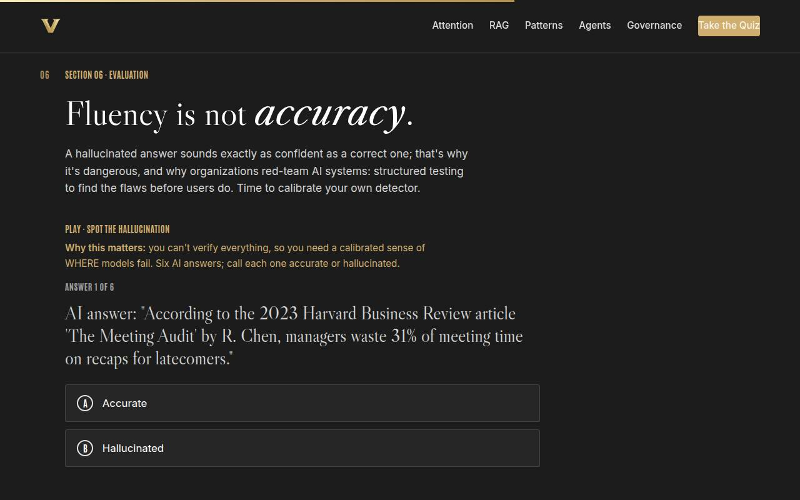
06 · Spot the hallucination Full 7 min · Core 5
Calibrate hallucination detection by hand, then name the discipline that does it at scale: red-teaming and evaluation.
Say
“Six answers, all generated by AI, all delivered with identical confidence. Some are accurate. Some are invented. Your job: call each one. And here's why this game matters: a hallucinated answer sounds exactly as confident as a correct one. Fluency and accuracy are separate qualities, and your ear can't always tell them apart, which is precisely why organizations red-team these systems instead of vibing them.”
Do
- Frame it as a game with a lesson inside: six AI answers, call each accurate or hallucinated.
- Run it on devices, or as a room vote with hands on the projector; room-vote mode is louder and better.
- After the reveal, ask which ones fooled people; item 6, the Python half-truth, usually gets the best discussion.
- Land the collected tells from the gold card, and the kicker: production hallucinations often have NO tell.
- Introduce red-teaming in one line: what you just did, done as a structured discipline, per NIST's definition.
Ask
“Which one fooled you, and what would have caught it?”
Expect:
- The fabricated HBR citation, caught only by searching for it
- The Python half-truth, because the logo detail checks out
- Someone got them all and says so
Respond: For the perfect scorer: 'Great, now imagine six hundred answers a week instead of six. The habit scales; the instinct doesn't.' For everyone else: 'Notice every catch required a CHECK, not a feeling. That's the lesson wearing a game costume.'
Debrief: Fact, date, number, name, citation: verify at the source. And when a vendor claims their model doesn't hallucinate, ask for the eval results.
Validate: Most of the room at 5+ of 6; everyone can name at least one tell AND repeat the caveat that tells aren't guaranteed.
Watch for: Overconfidence from a good score. The debrief line matters: these were TRYING to be catchable. The habit beats the instinct.
Transition: “One skill left: deciding what information is allowed near these tools in the first place. Three colors, four functions, and then you build.”
Core path: Core: keep at nearly full length; this is the session's signature moment. Run it as a fast room vote.
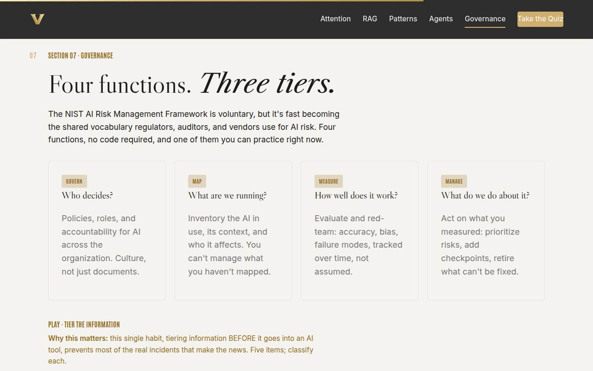
07 · Governance Full 8 min · Core 5
Make NIST's four functions a usable checklist and drill the tiering habit that prevents most real incidents.
Say
“Last concept, and it's four questions and three colors. The NIST AI Risk Management Framework sounds like homework; it's actually the questions a reasonable adult asks about any tool: who decides, Govern. What are we running, Map. How do we know it works, Measure. What do we do about what we find, Manage. And the three colors are the ones you already know from AI Basics: green public, yellow internal and company-managed tools only, red sensitive, named approval or no AI at all. Tier first, prompt second. That single habit prevents most of the incidents that make the news.”
Do
- Walk the four function cards as plain questions: who decides, what are we running, how well does it work, what do we do about it.
- Connect the tiers to AI Basics: same green, yellow, red, now wearing their governance name.
- Send them to the tier sorter: five items, classify each. Item 4, the reorg memo, is the discussion magnet.
- Run the group activity: one real tool through the four functions; the first unanswered question is the governance gap.
- Keep it empowering, not scary: tiering takes three seconds and prevents three-month cleanups.
Ask
“Pick one AI tool your team already uses, even informally. Which of the four questions can't you answer?”
Expect:
- Measure, almost universally: nobody has evaluated it
- Map: shadow tools nobody inventoried
- Govern: no named owner
Respond: Name the pattern kindly: 'Measure is the room's gap, and that's normal; evaluation is the least visible function. The point isn't shame. It's that you just found your gap in four minutes, for free, before an auditor or an incident found it for you.'
Debrief: Four questions, three colors, three seconds of tiering. Governance at your level isn't a document; it's a habit.
Validate: 4+ of 5 on the sorter; each table can name their tool's first unanswered governance question.
Watch for: Governance fatigue in the room's body language. The energy move: this is the shortest section, and it ends in the capstone they've been building toward all session.
Transition: “Toolkit complete. Quiz first, then the card that puts all of it on one page.”
Core path: Core: function cards in one minute, sorter on devices, skip the four-functions group exercise; the capstone's tier field carries the habit.
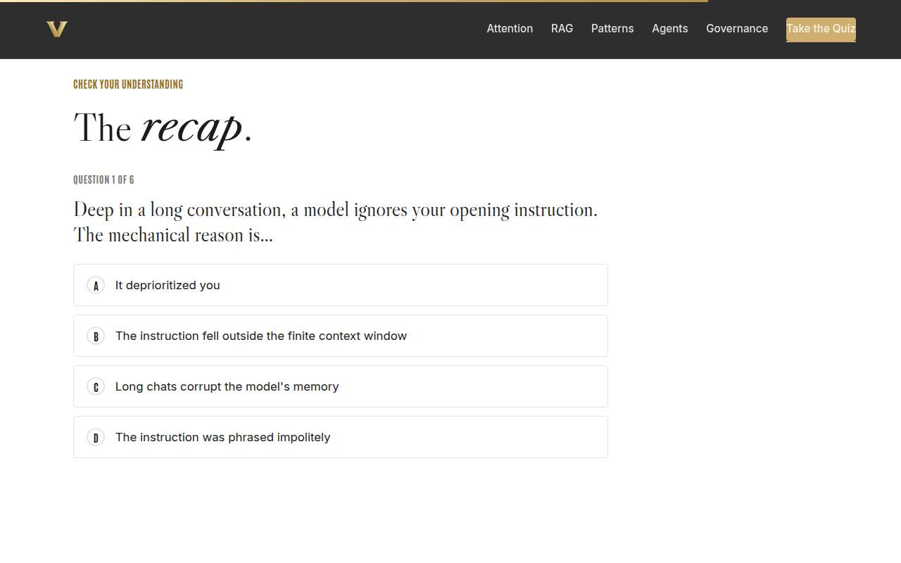
Recap quiz Full 4 min · Core 4
Score the session's knowledge against the six objectives before the capstone applies it (Kirkpatrick Level 2).
Say
“Six questions, one per objective. This is the systems check before you build the workflow that leaves the room with you.”
Do
- Everyone takes it on their own device, all six questions.
- Ask for hands on 5-or-better; celebrate briefly.
- For any question the room visibly missed, do a 30-second reteach from the relevant slide, not a lecture.
Validate: Room mode at 5/6 or better. The quiz maps one-to-one onto the objectives, so misses tell you exactly what to reteach.
Watch for: Racing. Frame it as a systems check before the build, not a race.
Transition: “Now the artifact this whole session was aiming at.”
Core path: Core: keep at full length; this is the objectives' evidence.
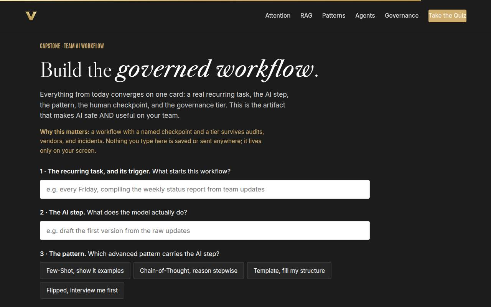
Capstone · Team AI workflow Full 8 min · Core 6
Convert the session into one governed, dated workflow card: the transfer artifact, the Level 3 seed, and the input to the 30-day census.
Say
“One card, five decisions, and everything from today is on it. The trigger: what starts the workflow. The AI step: what the model actually does, and notice the safe verbs are draft, sort, and summarize, not send. The pattern that carries it. The human checkpoint that clears it. And the tier that governs it. Build it for the task you brought. When you're done, show one neighbor and take one piece of feedback; workflows survive contact with a second brain much better than with none.”
Do
- Frame it: one real recurring task, five decisions: trigger, AI step, pattern, checkpoint, tier.
- Give quiet time; this is individual work. Circulate for stuck learners: the pre-work task they brought is the raw material.
- Watch the tier field: anyone picking red gets the built-in warning; make sure they read it as 'redesign or get written approval,' not 'proceed.'
- Push the copy button moment, then the peer step: share the card with ONE neighbor for one piece of feedback.
- Close the loop: run it once within 7 days and note what the checkpoint catches; that note is the evidence.
Ask
“What's most likely to make you skip running this for real, and what's your plan for that obstacle?”
Expect:
- Time; the week will eat it
- The checkpoint feels like extra work
- Not sure my prompt is good enough yet
Respond: Time: book the first run now, it's one calendar block. Checkpoint skepticism: 'run it once WITH the checkpoint; what it catches will settle the argument either way.' Prompt doubts: 'the pattern is the training wheels; Few-Shot with two examples forgives a mediocre prompt.'
Debrief: A workflow with a named checkpoint and a tier survives audits, vendors, and incidents. Everything else today was preparation for this card.
Validate: Every learner builds a card (all five fields) and exchanges feedback with a neighbor. The card plus the 7-day pulse plus the 30-day census is the evidence chain.
Watch for: Red-tier workflows sailing through on autopilot; that warning is the most important sentence some learners will read today. Also watch for AI steps with no checkpoint logic: 'draft' is safe, 'send' is not.
Transition: “Reference shelf in one breath, and then the send-off.”
Core path: Core: protect at full length minus the peer-feedback swap; never cut the capstone itself.
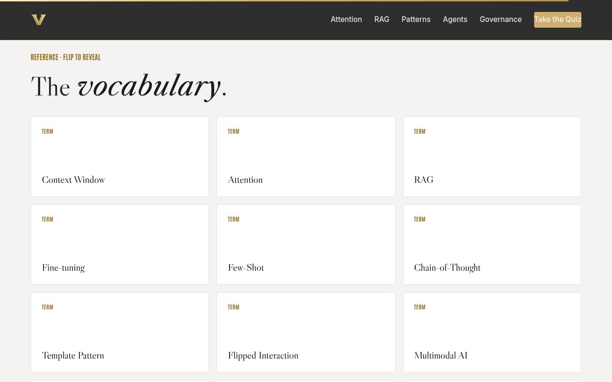
Glossary Full 1 min · Core skip
Signpost the reference layer; it lives here for after the session.
Say
“Every term from today lives here, flip cards, whenever you need the vocabulary back, including in the meeting where a vendor starts using it at you.”
Do
- Flip one card on the projector (Human Checkpoint is a good pick).
- Tell them it's all here whenever they need the vocabulary back.
Validate: None; reference material.
Watch for: Don't tour all thirteen cards; one flip makes the point.
Transition: “Last slide. One run left.”
Core path: Core: skip; point at it verbally from the closing slide.
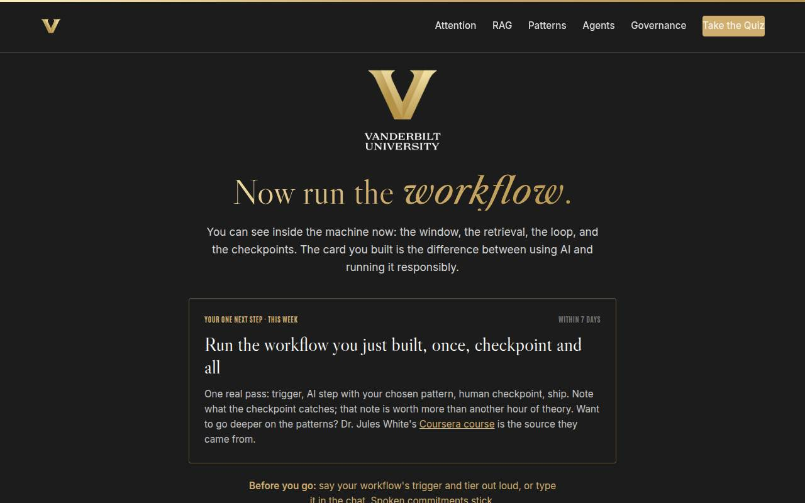
Closing · commitment Full 3 min · Core 2
Convert cards into public commitments, capture the Level 1 reaction check, and point at the follow-up chain.
Say
“Here's the whole session in one breath: the window explains the forgetting, retrieval grounds the answers, the framework starts cheap, the patterns upgrade your prompts, agents get checkpoints, your detector needs a habit, and information gets tiered before it gets pasted. You have a card with all five decisions made. Before you go: what's the trigger, and what's the tier? Say it out loud.”
Do
- Read the featured card: the one next step is running the workflow, once, checkpoint and all, within 7 days.
- Run the fist-to-five (Level 1): 'On a fist to five, how ready do you feel to run your workflow?' Scan and remember the number for your session log.
- Run the commitment round, popcorn style: trigger and tier, out loud or in chat.
- Point at the cheat sheet and workflow card buttons, and the Jules White course for pattern depth.
- Tell them the 7-day pulse and 30-day census are coming, then land the last line and stop on time.
Ask
“Around the room, one line each: your workflow's trigger, and its tier.”
Expect:
- 'Friday status report, yellow'
- 'Inbox triage every morning, green'
- Someone admits theirs came out red
Respond: Thank each one, no commentary. For the red admission, publicly and warmly: 'That card just did its job. Redesign the AI step or get the named approval, and either way you found out today instead of in an incident report.'
Debrief: The session's success metric isn't in this room; it's the 30-day census: how many teams have a written, tiered workflow running. Your card is one of them.
Validate: Fist-to-five mostly 3+ (Level 1); a majority state a trigger-and-tier out loud or in chat. Count both; with the pulse and census, that's your evidence chain.
Watch for: Cards that quietly skipped the tier decision. The commitment round catches them: no tier, no commitment; help them pick one on the spot.
Transition: “Go run it. And when the checkpoint catches something, and it will, write it down; that note is the best AI education you'll get all month.”
Core path: Core: fist-to-five plus a fast commitment round; the ending survives every cut.
Generated from facilitator/notes.json. The on-screen facilitator edition lives at ./ alongside this guide.